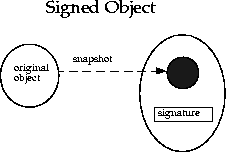

7.1 java.security.GuardedObject 와 java.security.Guard
AccessControlContext 클래스는, 다른 문맥으로 액세스 제어를 실시하는 경우에 유용한 것을 설명했습니다. 이러한 상황은 그 밖에도 존재합니다. 예를 들어, 자원의 공급자가 자원의 소비자와 같은 thread에 없는 경우, 및 소비자 thread가 공급자 thread에 액세스 제어 문맥 정보를 제공할 수 없는 경우 (문맥의 시큐리티이기 때문에, 문맥이 너무 커 건네줄 수 없기 때문에, 그 외의 이유에 의한다)입니다. 이러한 경우를 위해서(때문에), 아래의 그림에 나타내도록(듯이), 자원에의 액세스를 보호하는 GuardedObject 라고 하는 클래스가 제공됩니다.

기본적인 생각은, 자원의 공급자가 자원을 나타내는 객체를 작성해, 자원 객체를 내부에 짜넣는 GuardedObject 를 작성해, 그리고 GuardedObject 를 소비자에게 제공한다고 하는 것입니다. GuardedObject 의 작성시에 공급자도 Guard 객체를 지정해, Guard 객체 내부의 시큐리티 체크의 조건이 채워졌을 경우에만, 소비자를 포함한 어디에서라도 자원 객체를 취득할 수 있도록(듯이) 설정합니다.
Guard 는, 인터페이스이므로, 어떤 객체도 Guard 로 할 수 있습니다. 이 인터페이스의 유일한 메소드는,checkGuard 입니다. checkGuard 는, Object 인수를 취득해, 특정의 시큐리티 체크를 실행합니다. java.security 의 Permission 클래스는, Guard 인터페이스를 구현합니다.
예를 들어, 시스템 thread가 /a/b/c.txt 라고 하는 파일을 읽어내용으로 열도록(듯이) 요구되었다고 합니다. 그러나, 시스템 thread는, 누가 요구했는지, 어떤 상황으로 요구를 했는지 모릅니다. 이 때문에, 서버측에서는, 정확한 액세스 제어를 실시할 수 없습니다. 시스템 thread는, 다음에 나타내도록(듯이), GuardedObject 를 사용해 액세스 제어 검사를 지연 시킬 수가 있습니다.
FileInputStream f = new FileInputStream("/a/b/c.txt");
FilePermission p = new FilePermission("/a/b/c.txt", "read");
GuardedObject g = new GuardedObject(f, p);
이것으로 시스템 thread는, g 를 소비자 thread에 건네줄 수가 있습니다. 그 thread가 파일 입력 스트림을 가져오려면 , 다음의 메소드를 호출할 필요가 있습니다.
FileInputStream fis = (FileInputStream) g.getObject();
다음에 이 메소드는, Guard 객체 p 로 checkGuard 메소드를 호출합니다. p 는 Permission 이므로,checkGuard 메소드는 실제로는 다음과 같이 됩니다.
SecurityManager sm = System.getSecurityManager();
if (sm ! = null) sm.checkPermission(this);
이것에 의해, 적절한 액세스 제어 검사가 소비자 문맥내에서 확실히 실행됩니다. 사실, 빈번하게 사용되는 해시 테이블 및 액세스 제어의 일람은, 많은 경우 옮겨놓을 수 있어 GuardedObject 의 해시 테이블이 보존됩니다.
GuardedObject 및 Guard 의 이 기본적인 패턴은, 매우 일반적입니다. 기본적인 Guard 및 GuardedObject 클래스를 상속하는 것으로써, 개발자는 강력한 액세스 제어 툴을 용이하게 입수할 수가 있습니다. 예를 들어, 메소드마다의 호출은, 각 메소드에 적절한 Guard 를 설정하는 것으로써 실현될 수 있습니다. 또 Guard 는 일시, 서명자, 호출측의 ID, 그 외 해당하는 정보를 검사할 수 있습니다.
GuardedObject 가 객체를 돌려주기 (위해)때문에, 어떤 종류의 형태 정보가 없어집니다. GuardedObject 는, 제휴하는 파티간에 사용하는 것을 의도해 설계되고 있기 (위해)때문에, 수취하는 측은 받는 (또는 캐스트 한다) 객체의 종류를 알 필요가 있습니다. 실제, GuardedObject 의 일반적인 사용법으로서 그것을 서브 클래스화하는 (GuardedFileInputStream 클래스 등) 일이 상정되고 있기 (위해)때문에, 입력 정보의 캡슐화 및 캐스트는, 서브 클래스내에서 적절히 실행할 수 있습니다.
7.2 java.security.SignedObject
이 클래스는, 다른 시큐리티 프리미티브(primitive)의 중요한 구축 블록입니다. SignedObject 에는, 다른 직렬화 가능 객체, 및 서명되는 객체와 그 서명이 포함되어 있습니다. 서명이 null 치가 아닌 경우, SignedObject 에는, 서명 첨부 객체의 유효한 디지털 서명이 포함됩니다. 이것을 다음의 그림에 나타냅니다.

배후의 서명 알고리즘은,sign 메소드 호출에의 파라미터로서의 Signature 객체에 의해 설정됩니다. 알고리즘은, DSA 및 SHA-1 를 사용하는 NIST 표준 DSA 가 됩니다. 알고리즘은, 「SHA/DSA」등과 같은 서명 규약을 사용해 지정됩니다.
서명 첨부 객체는, 원의 객체의 「딥 카피」(직렬화 표현)입니다. 한번 카피가 작성되면(자), 원의 객체를 한층 더 조작해도 카피에 영향이 미칠 것은 없습니다. 서명 첨부의 객체는, 불변의 객체입니다.
서명 첨부 객체 작성의 일반적인 예를 다음에 나타냅니다.
Signature signingEngine =
Signature.getInstance(algorithm, provider);
SignedObject so =
new SignedObject(myobject, signingKey, signingEngine);
검사의 일반적인 예 (SignedObject 인 so 를 받는다)는, 다음과 같습니다. 알고리즘명을 알 수 있고 있는 경우는, 최초의 행은 필요 없습니다.
String algorithm = so.getAlgorithm();
Signature verificationEngine =
Signature.getInstance(algorithm, provider);
so.verify(verificationEngine);
SignedObject 의 어플리케이션에는, 잠재적으로 이하가 포함됩니다.
-
위조가 불가능한 인증 토큰으로서 임의의 Java 어플리케이션 환경에서 사용할 수 있다. 이 토큰을 건네줄 때는, 눈치채지 못한 동안에 악의를 가지고 변경되는 것을 걱정할 필요가 없다
-
데이터와 객체를 서명 및 직렬화해, Java 실행시의 밖에 포함하는 경우에 사용할 수 있다 (위기인 액세스 제어 데이터를 디스크에 보존하는 경우 등)
-
네스트 한 SignedObjects 는, 인증과 위양의 체인을 닮은 서명의 논리 순서를 구축하는데 사용할 수 있다
이 클래스는, 1 개의 서명 첨부 객체에 복수의 서명을 실시할 수 있도록(듯이), 장래 서브 클래스화 되는 것이 예정되어 있습니다. 그 경우에는, base class내에 있는 기존의 메소드 호출은, 시멘틱스가 완전하게 호환성이 있는 것이 됩니다. 특히, 서명이 1 개만 있는 경우, 어느 get 메소드도 고유의 값을 돌려줍니다. 복수의 서명이 있는 경우에는, 일련의 서명중에서 임의의 서명을 1 개 돌려줍니다.
목차 | 전의 항목 | 다음의 항목
Copyright © 1997-1999 Sun Microsystems, Inc. All Rights Reserved.